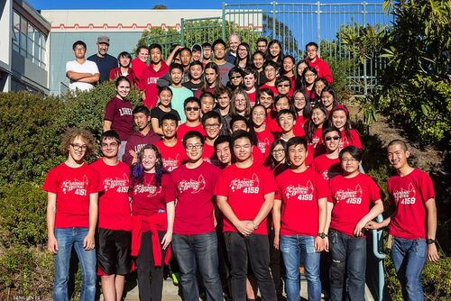
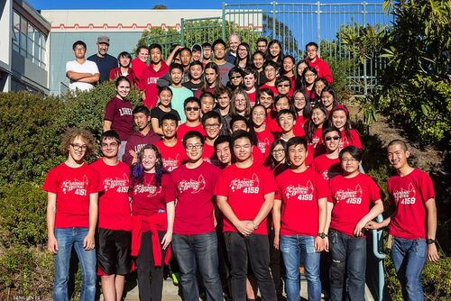
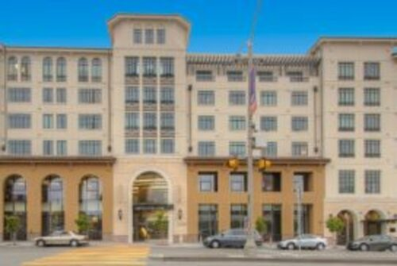
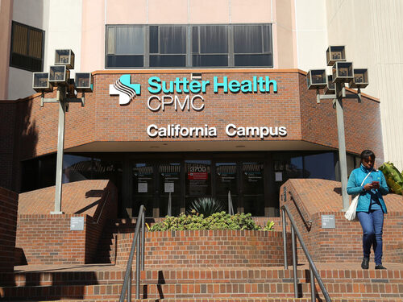
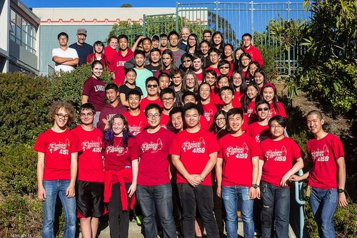
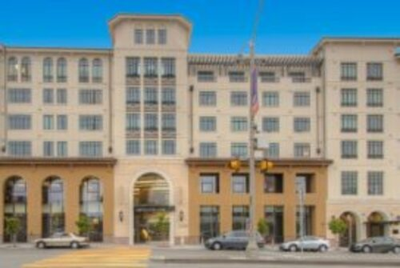
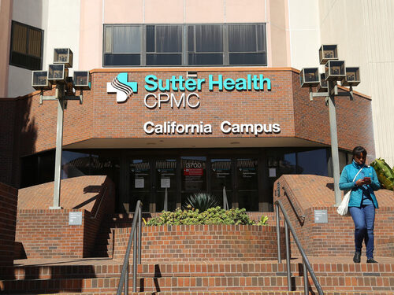

Alston Tran
Hello! My name is Alston Tran. I was born and raised in San Francisco, California.
I am currently a fourth-year majoring in Political Science at the University of California, Riverside.
I originally majored in psychology. However, after the 2016 presidential election, it was clear that politics within the United States was changing, norms between politicians were breaking, and interesting results were yet to be seen. Ever since then, I have focused most of my studies on American politics, learning the history and patterns within American politics that would show up throughout time. Personally, I have attended community meetings, several City Hall meetings, and many political rallies local to my hometown of San Francisco. In addition, I have volunteered at a voting center, hoping to get a glimpse of active participation in politics.
Other volunteer work outside of my major would include volunteering at the Alzheimer’s unit, the diabetes center, and the transport team at the California Pacific Medical Center. These hospital work initially gave me more insight towards the real workspace outside of school, along with connection with other people, learning more about the professional life of medical workers. Although my school focus has shifted from the medical aspect, I still find the work there important and interesting, nonetheless.
In high school, I was part of the school's robotics team, the Cardinalbotics 4159. There I was given two leadership positions as the quartermaster and the shop master. I would teach and train present and future team members on using all the machineries available in the shop. In addition, I would organize necessities for the team in completing the robot build for yearly competitions. Such experience expanded my skills in teamwork and leadership.
Experience
Quartermaster/Shop Master/Mentor
• Quartermaster: Maintained inventory of team supplies and helped budget expenses.
• Shop Master: Maintained organization of shop. Trained team on how the machine shop is organized and prepared team members for their duties.
• Participated in 4 competitions (2 CalGames, 2 Silicon Valley Regionals) and won one Internal Robotic Competition.
• Used multiple heavy machines/tools to build necessary game parts for robot to practice on.
• Volunteered at the Bay Area Discovery Day at the AT&T Park where the team performed a few demonstrations to the public.
• Volunteered in several street fair to discuss with the public about the team and its achievements.
Day Center Volunteer
• Interacted with clients through activities and projects.
• Assisted nurses and staff in set-ups and translating for the clients.
Center for Diabetes Services Volunteer/Alzheimer's Care Unit/Transport Unit
Center for Diabetes Services:
• Arranged patient files and organized medical supplies.
• Made and sorted educational packets on diabetes for patients.
Alzheimer’s Care Unit:
• Provided company to patients by talking and doing hands-on activities together.
• Assisted nurses and staff with preparation of the activities.
Transport Unit:
• Pushed patients around to where they needed to be in wheelchairs.
• Assisted patients in moving in/out of the hospital.
• Delivered mails, medicines, and medical supplies around the hospital.
Education
University of California, Riverside
Lowell High School
Portfolio
 



 